Clínica Vitallis
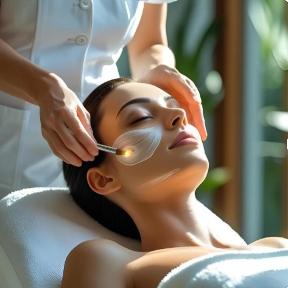
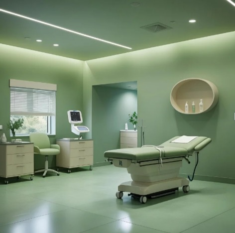
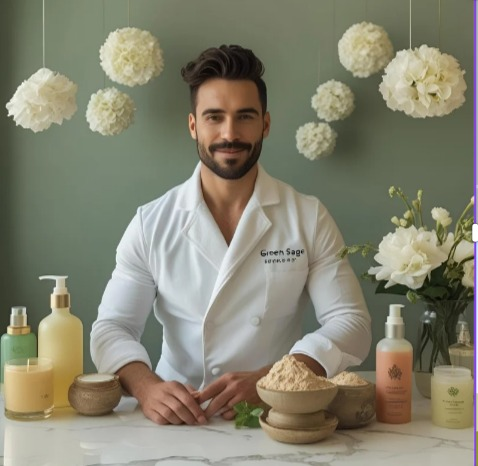
Sobre nós
A Vitallis surgiu em 2020 com o desejo de criar um espaço onde o cuidado com o corpo também fosse um momento de reconexão com a própria essência. Depois de analisar as clínicas de estética ao redor do Brasil, era notório que faltava algo em todas elas: um ambiente que unisse ciência, bem-estar e sofisticação, sem perder o toque humano.
Inspirada pela palavra latina "Vitalis", que significa “cheio de vida”, a clínica foi concebida como um refúgio moderno e elegante, onde cada detalhe — da paleta de cores ao atendimento personalizado — é pensado para acolher.
Porque na Vitallis, cuidar da beleza é também cuidar da vida.
E cada pessoa que passa por aqui leva um pouco mais de si — e de sua melhor versão — para o mundo.
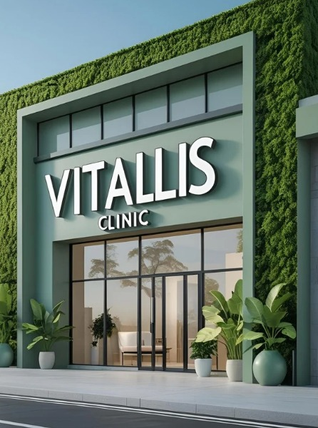
Procedimentos Estéticos
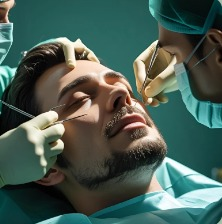
Otoplastia
Corrija a forma das orelhas e conquiste um visual mais simétrico e harmonioso, elevando sua autoestima.
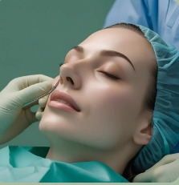
Rinoplastia
Realce sua beleza com um nariz mais proporcional ao seu rosto, unindo estética e bem-estar.
Mentoplastia
Transforme seu perfil com um queixo mais definido e equilibrado, destacando seus traços naturais.
Preenchimento Facial
Recupere o volume e a firmeza da pele com resultados imediatos e um toque de juventude.
VITALLIS -
Uma clínica,
várias especialidades
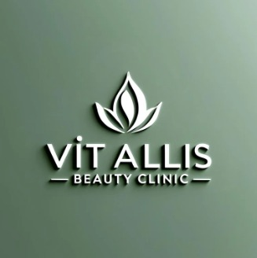
PROCEDIMENTOS
CORPORAIS
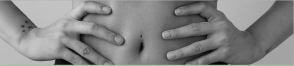
Lipoescultura
Lipoaspiração
Abdominoplastia
Procedimentos Pequenos
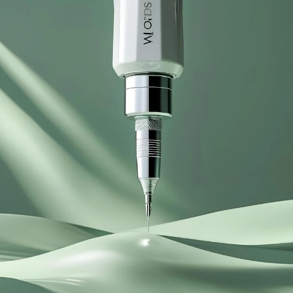
Microagulhamento:
Estimulação da produção de colágeno através de pequenas perfurações na pele, auxiliando na redução de rugas, cicatrizes e estrias.
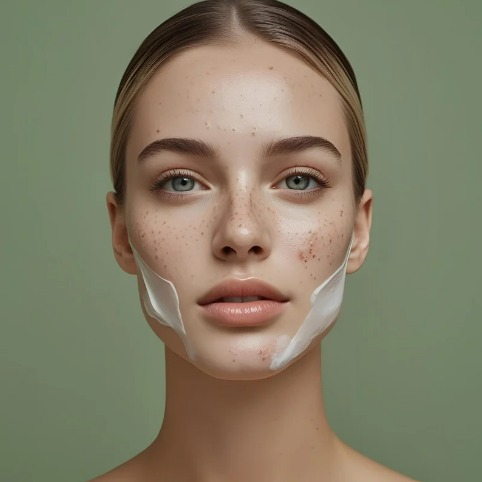
Tratamentos para Acne:
Controle da oleosidade, redução de inflamações e prevenção de novas lesões.
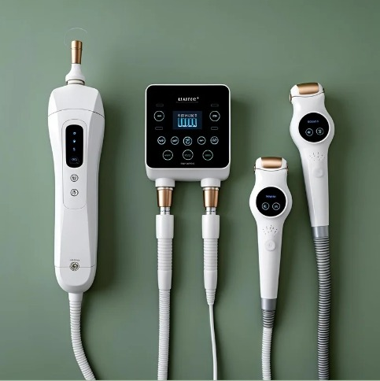
Tratamentos para Celulite:
Combate à celulite através de procedimentos como radiofrequência, endermologia e outros que visam melhorar a aparência da pele e reduzir a retenção de líquidos.
A clínica
A clínica oferece um ambiente moderno, sofisticado e acolhedor, projetado para proporcionar conforto e tranquilidade a seus pacientes.
Com salas de atendimento e procedimentos equipadas com tecnologia de ponta, a clínica prioriza a segurança e a qualidade em cada detalhe.
O espaço conta com uma equipe altamente qualificada e uma atmosfera serena, onde a privacidade e o bem-estar dos pacientes são sempre prioridades.
Tudo foi pensado para criar uma experiência harmoniosa e personalizada, desde a consulta até o pós-operatório.